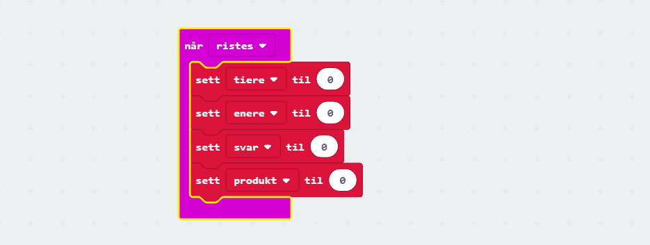

Dette er et enkelt og modifiserbart gangespill for micro:bit. Det fungerer slik at når en rister micro:biten så vil en få presentert et gangestykke. En svarer ved å trykke på A-knappen for antall tiere i svaret og B-knappen for antall enere. Når man har svart så trykker man på A+B. Dersom man svarer korrekt så vil en få opp et smilefjes, hvis ikke kommer et surt fjes.
Steg 1: Når microbit ristes
Sjekkliste

Test prosjektet
Det er to forskjellige måter vi kan teste micro:bit-programmer på:
Siden vår kode skal reagere når man rister på micro:biten kan du simulere
dette ved å klikke på den hvite prikken til venstre for teksten SHAKE på
micro:bit-simulatoren.
Det lastes nå ned en fil som heter microbit-Uten-navn.hex til datamaskinen
din. Samtidig dukker det opp et vindu som sier at du må flytte denne filen
til MICROBIT-disken på datamaskinen din.
Steg 2: Registrere svar
Sjekkliste
Steg 3: Kontrollere svar
Sjekkliste
Steg 4: Muligheter for endringer
Sjekkliste
Forbedre denne siden
Funnet en feil? Kunne noe vært bedre? Hvis ja, vennligst gi oss tilbakemelding ved å lage en sak på Github eller fiks feilen selv om du kan. Vi er takknemlige for enhver tilbakemelding!